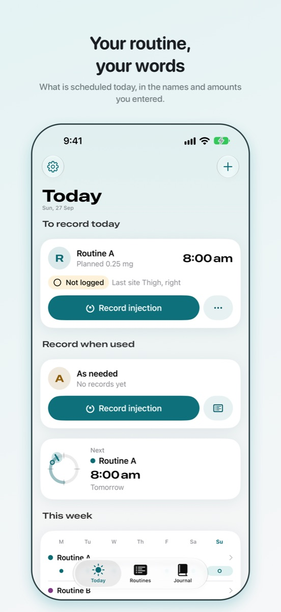
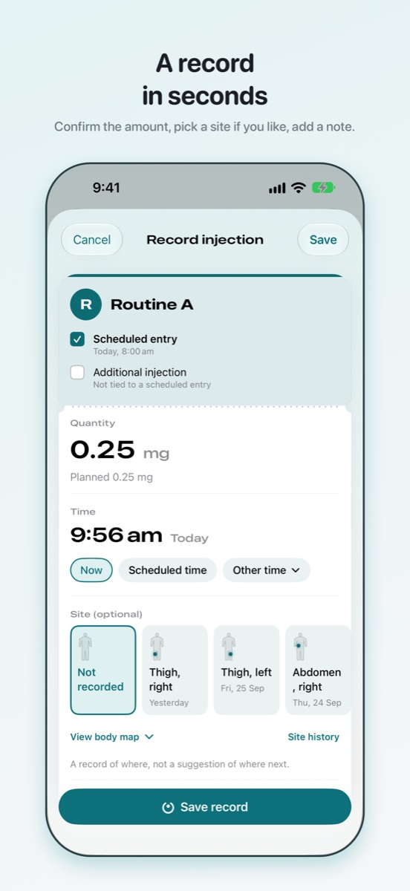
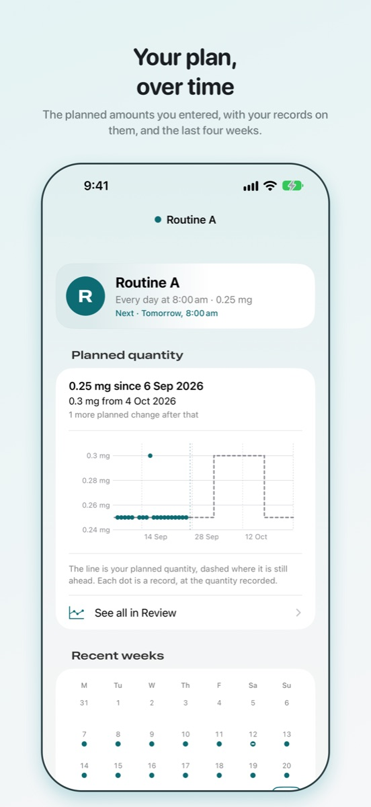

Vialog
Enjeksiyon rutininiz, kendi ifadelerinizle kayıt altında.
Zaten bir enjeksiyon rutini uygulayan kişiler için özel bir iPhone günlüğü: ne kullandığınız, ne kadar, ne zaman, nerede ve nasıl hissettiğiniz. Adları, miktarları ve programı siz belirlersiniz. Vialog kaydı tutar.



Kişisel bir kayıt. Bu uygulama ürün ya da tedavi değişikliği önermez. Hiçbir şey seçmez, miktar hesaplamaz ve değişiklik önermez.
Vialog ne yapar
- Rutinlerinizi tutar. Her birine kendiniz ad verirsiniz; saatleri ve planlanan miktarı, zaten kullandığınız birimlerle belirlersiniz. Hiçbir şey aranmaz, önerilmez ya da dönüştürülmez.
- Size hatırlatır. Her planlı saatte, iOS tarafından aygıtta iletilen bir hatırlatıcı. Varsayılan olarak yalnızca planlı bir zamanınız olduğunu söyler; rutinin adı ve miktarı Kilitli Ekran'da yalnızca siz bunu açarsanız görünür.
- Saniyeler içinde kaydeder. Miktarı onaylayın, isterseniz bir bölge seçin, bir not ekleyin. Önceki bölgeler görünür kalır; böylece daha önce nereleri kaydettiğinizi görebilirsiniz.
- Günlük tutar. Enerji, uyku ve iştah üzerine check-in'ler, kendi sözcüklerinizle belirtiler, vücut ölçümleri ve tahlil sonuçları; herhangi bir günde eklenir ve siz bağlamadıkça rutinlerinizden ayrı tutulur.
- Geçmişinizi gösterir. Filtrelerle birlikte güne göre her kayıt ve zaman içinde kaydettiklerinizin bir grafiği.
- İsterseniz elinizdekini sayar. Eldeki miktarı girin ve neye yettiğini görün; miktar kendi kayıtlarınızla azalarak sayılır. Bir sayı ve bir gün bildirir; sizi asla bir şey edinmeye yönlendirmez.
- Sizinle birlikte gider. Her şeyi CSV ya da PDF raporu olarak dışa aktarın (PDF, Vialog Pro ile), tek bir dosyaya yedekleyin, yeni bir iPhone'da geri yükleyin ya da tümünü silin.
Tasarımı gereği gizli
Hesap yok. Oturum açma yok. Reklam yok, analiz yok, izleme yok. Kayıtlarınız iPhone'unuzda saklanır, Watch uygulamasını kullanıyorsanız Apple Watch'unuzda gösterilir ve Vialog'un bunları gönderebileceği bir sunucusu yoktur. İsteğe bağlı Uygulama Kilidi, uygulama açılmadan önce Face ID, Touch ID ya da parolanızı ister ve uygulama değiştiricide boş bir örtü gösterir. Ayrıntılar gizlilik politikasında (İngilizce).
Yardım
- Enjeksiyon bölgelerinin kaydını tutmak
- Rutininize uyan hatırlatıcılar
- Apple Watch, widget'lar ve Siri ile kaydetmek
- Kayıtlarınızı randevuya götürmek
- Vialog'un neden sunucusu yok
İletişim
Sorularınız, hata bildirimleriniz ve istekleriniz memnuniyetle karşılanır. csergay@gmail.com adresine e-posta gönderin; yanıt alırsınız.
iOS sürümünüzü, Ayarlar'da görünen Vialog sürümünü ve derleme numarasını ve bir sorun çıktığında ne yaptığınızı yazmanız yardımcı olur.
Sık sorulan sorular
- Kayıtlarım nerede saklanıyor?
- iPhone'unuzda, uygulamanın kendi depolama alanında, aygıt parolasıyla korunarak. iPhone'unuzu iCloud'a ya da bir bilgisayara yedeklerseniz uygulamanın verileri, Apple'ın koşulları çerçevesinde bu yedeğin bir parçası olur. Başka hiçbir yerde bir şey tutulmaz.
- Vialog bana neyi ya da ne zaman kullanacağımı söyler mi?
- Hayır. Zaten uyguladığınız rutini, girdiğiniz miktarlarda ve saatlerde kaydeder. Asla bir ürün seçmez, miktar hesaplamaz, bölge önermez ya da değişiklik tavsiye etmez. Rutininizde bir şeyin değişmesi gerekiyorsa bu, rutini reçete eden kişiyle konuşulacak bir konudur.
- Neler ücretsiz, Vialog Pro neler ekler?
- Kaydetme, hatırlatıcılar, günlük, geçmiş, bölgeler, Uygulama Kilidi, CSV dışa aktarma, yedekleme, geri yükleme ve silme ücretsizdir ve ücretsiz kalır. Vialog Pro abonelik değil, tek seferlik bir satın almadır ve dört şey ekler: üçten fazla etkin rutin, eldeki miktar, Özet (kayıtlarınız istediğiniz aralıkta tek bir zaman ekseninde; son 30 gün Günlük'te ücretsiz kalır) ve PDF raporu. Zaten sahip olduğunuz her şey, satın alsanız da almasanız da çalışmaya devam eder.
- Vialog Pro'yu satın aldım. Yeni bir iPhone'da nasıl geri alırım?
- Vialog'da Ayarlar'ı, ardından Vialog Pro'yu açın ve satın aldığınız Apple Hesabı ile oturum açmışken Satın alımları geri yükle düğmesine dokunun. Aile Paylaşımı açıktır; satın alımlarınızı paylaştığınız kişiler de Vialog Pro'yu alır. Kayıtlarınız ayrıdır: onları bir yedek dosyasıyla ya da bir iPhone yedeğiyle taşıyın.
- Bir hatırlatıcı gelmedi.
- Hatırlatıcılar iOS tarafından iletilir ve iletim garanti edilmez. iOS Ayarlar'ında Vialog için bildirimlere izin verildiğini ve bir Odak modunun onları bekletmediğini denetleyin. Vialog'daki Ayarlar › Hatırlatıcıları kontrol et, iOS'ta kaç hatırlatıcının ayarlı olduğunu ve hangi tarihe kadar planlandıklarını gösterir.
- Hatırlatıcı neden hangi rutin olduğunu söylemiyor?
- Çünkü Kilitli Ekran'ı, telefonu görebilen herkes okuyabilir. Varsayılan hatırlatıcı yalnızca planlı bir zamanınız olduğunu söyler. Rutinin adını ve miktarını orada görmeyi tercih ederseniz Ayarlar'da Rutin adını ve miktarı göster seçeneğini açın.
- Bir kaydı değiştirebilir ya da kaldırabilir miyim?
- Evet. Miktarını, saatini, bölgesini ya da notunu düzeltmek veya kaydı kaldırmak için onu Bugün ya da Günlük ekranından açın. Kaldırılan planlı bir zaman yeniden “kaydedilmedi” durumuna döner. Her değişiklik bir revizyon olarak saklanır.
- Bir birim neden hiç dönüştürülmüyor?
- Çünkü bir dönüştürme, Vialog'un bilmediği ve varsaymaması gereken bir konsantrasyona bağlıdır. Miktarlar tam olarak yazdığınız gibi, seçtiğiniz birimde saklanır; farklı bir birimdeki kayıt, diğerlerine katılmak yerine olduğu gibi gösterilir.
- Her şeyi nasıl silerim?
- Ayarlar'ı, ardından Dışa aktarma, yedekleme ve silme bölümünü açın ve Tüm kayıtları sil düğmesine dokunun. Uygulamayı kaldırmak da depoladığı her şeyi kaldırır. Başka bir yerde tutulan ve istemeniz gereken hiçbir şey yoktur.